The Luna-app images are headless Skia renders of the real Avalonia view at 683×600. The dashboard images are headless Chromium captures of the staging dashboard (v0.17.9 before, v0.17.10 after). The staging test parent, chat, usage and profile were deleted after capture.
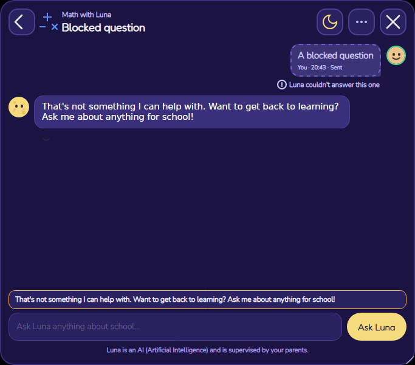
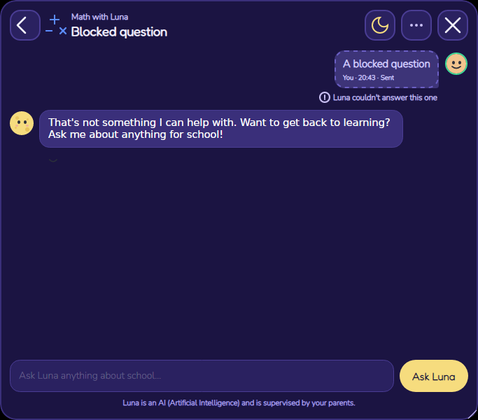
Before 26 Oct, 20:43 / after 26 Oct, 13:43 for the same 20:43 UTC
message (Pacific daylight, matching Hermosillo in October).
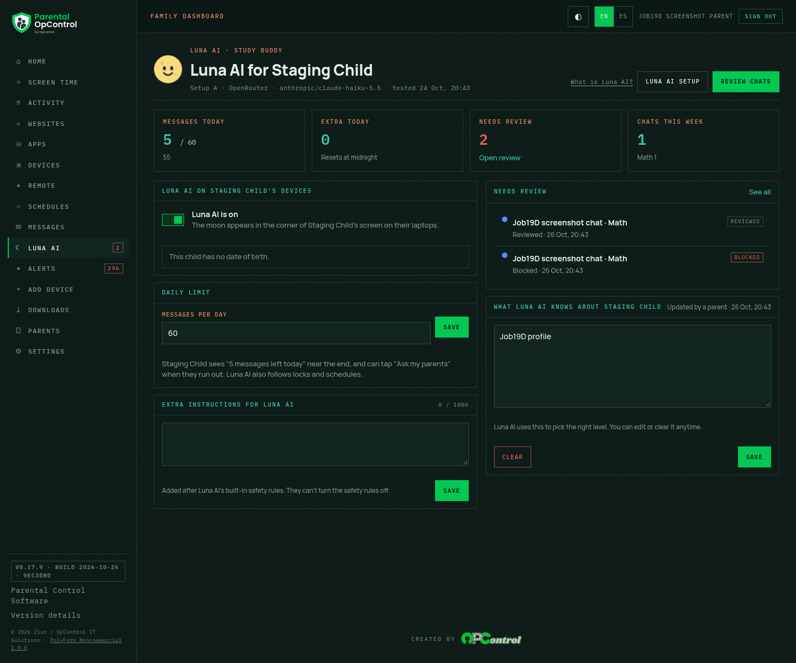
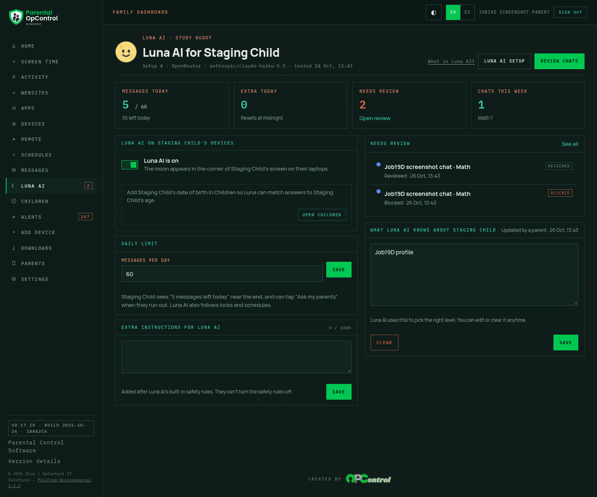
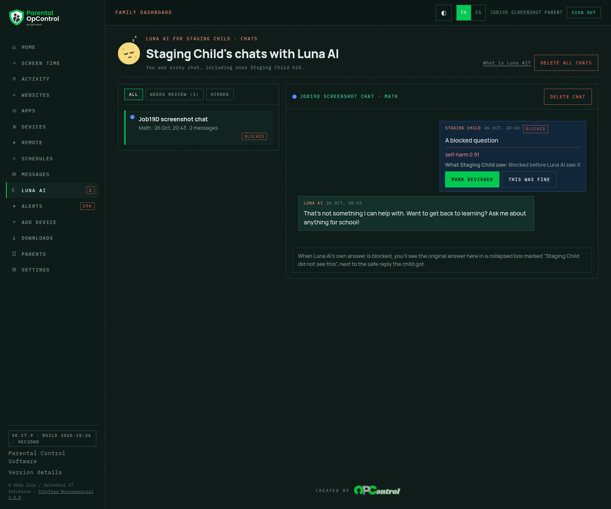
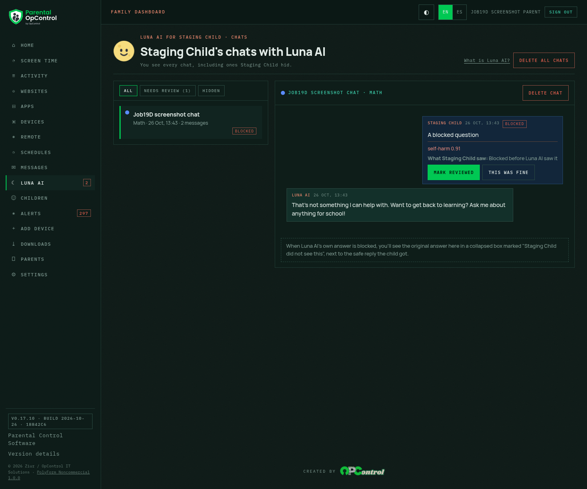
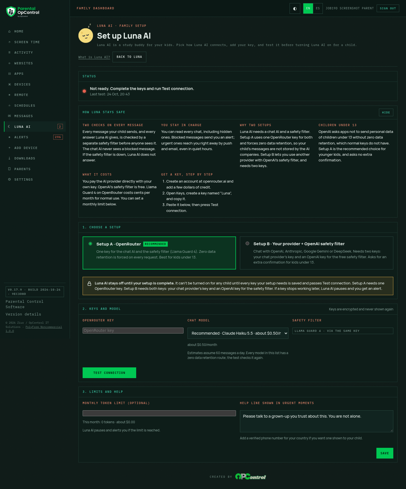
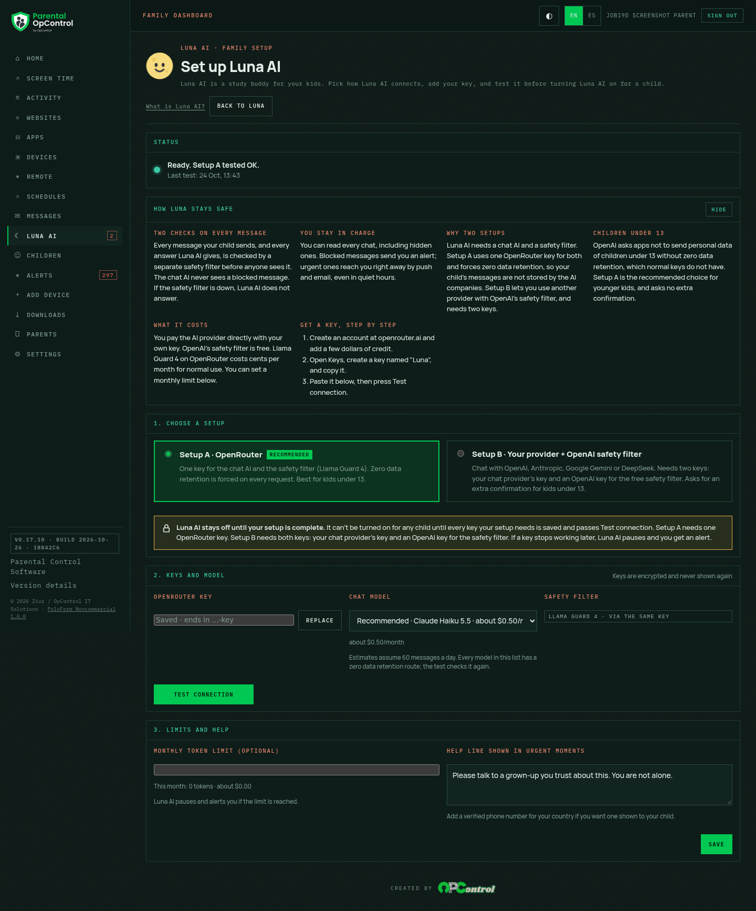
Before the tile showed 5 / 60 with a bare 55. After it shows
55 left today (EN) / Quedan 55 hoy (es-MX).
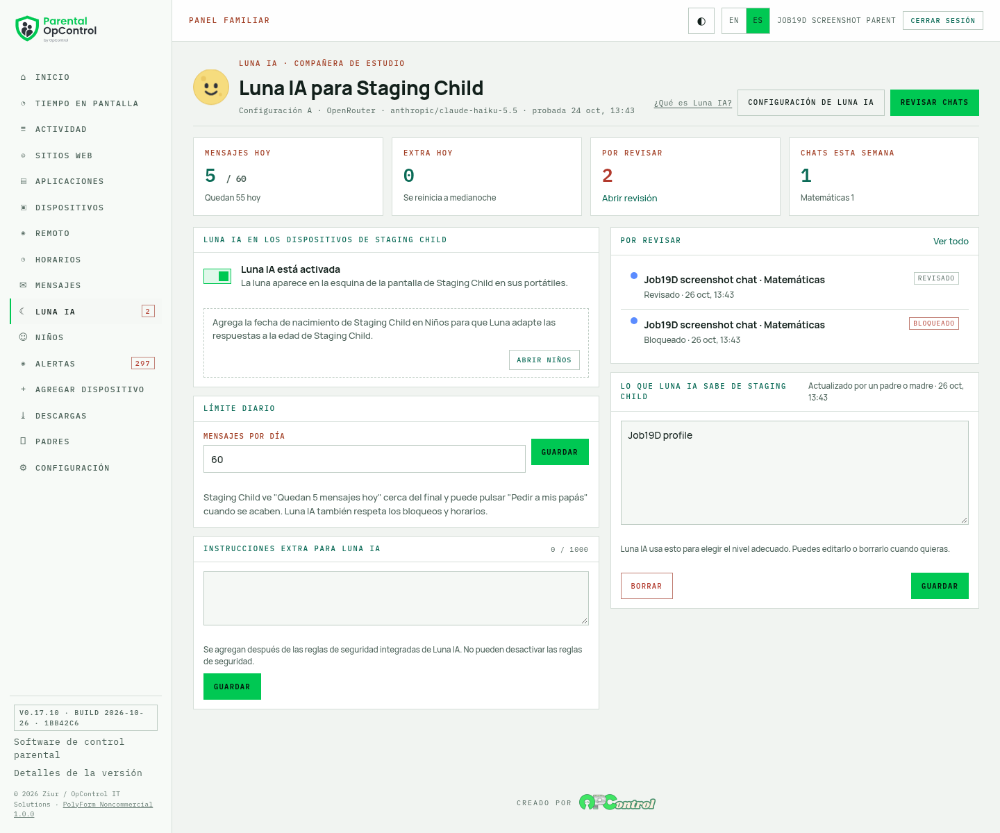
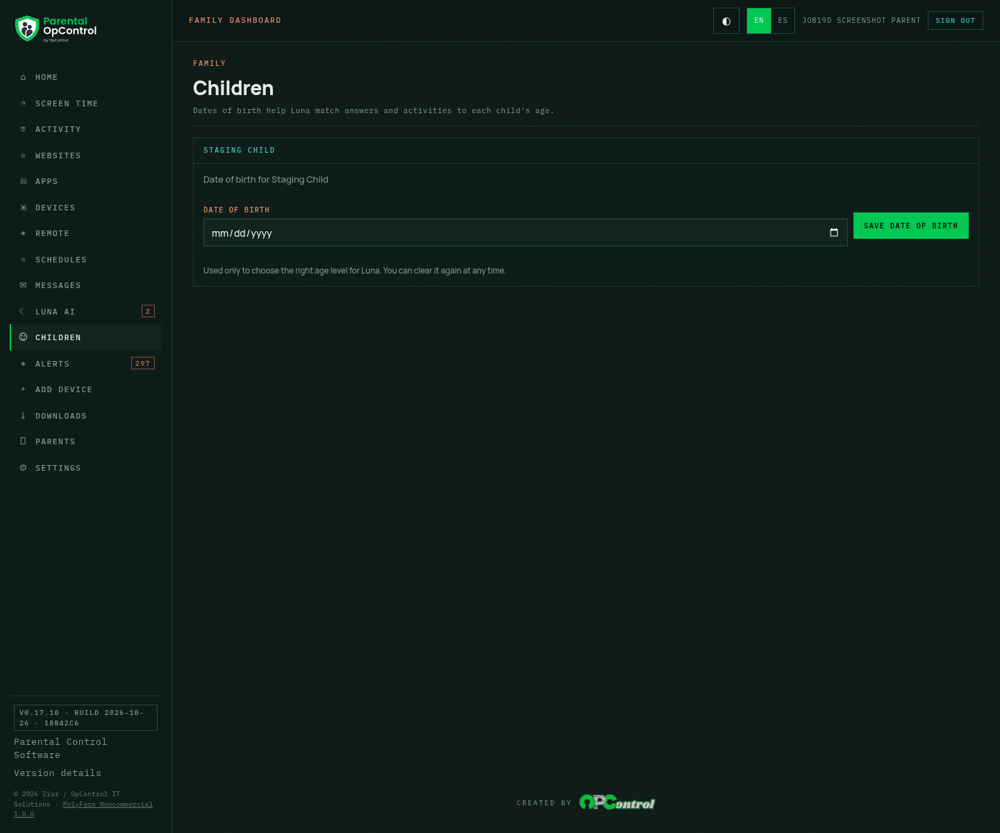
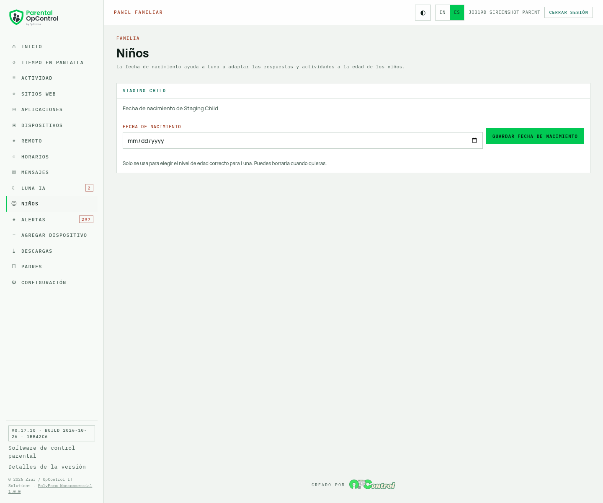
No date of birth was entered or changed by this job. The new page is for the parent to use. Limitation: the dashboard has no per-parent time zone, so it uses the family's device time zone (the same source the rest of the dashboard already uses).